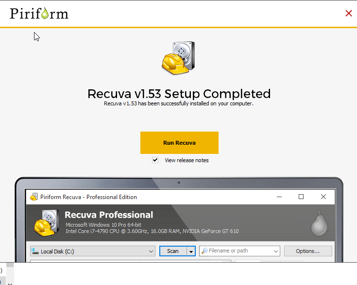
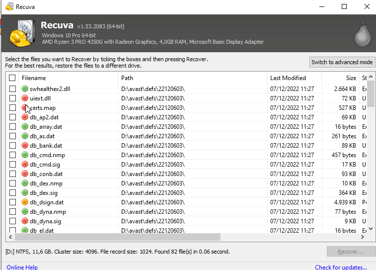
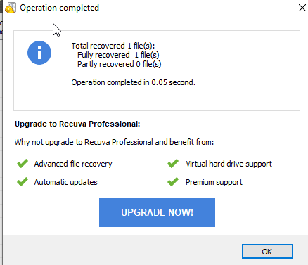
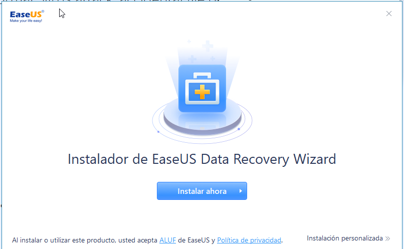
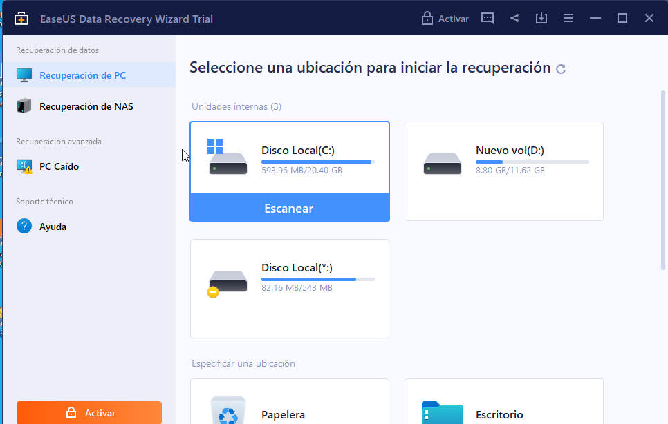
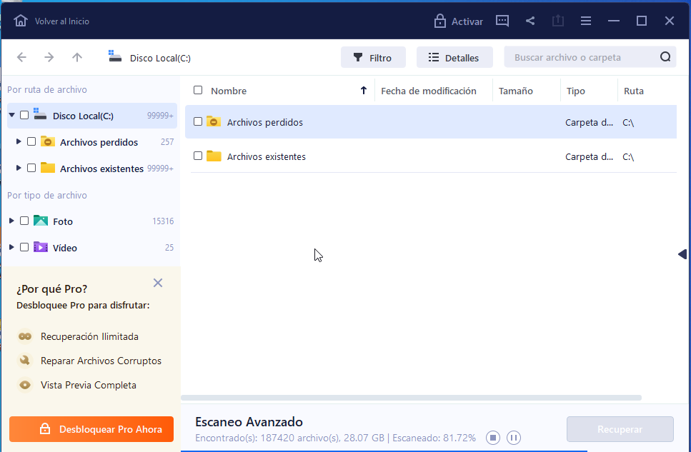
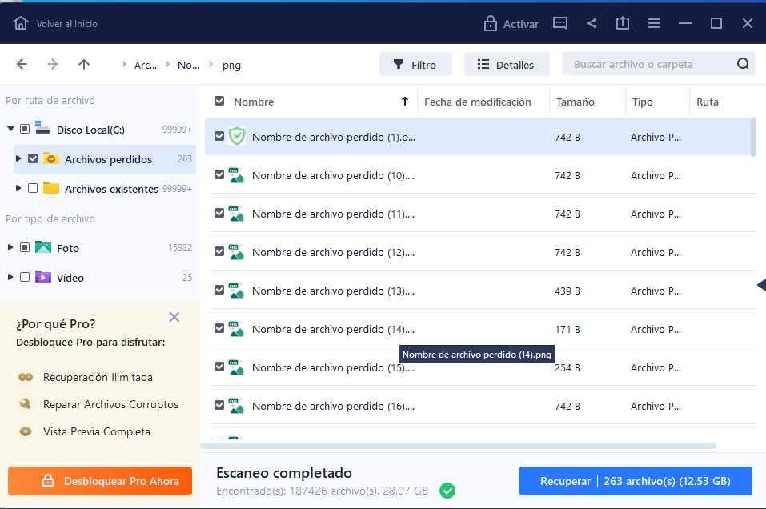

Recuva es un software de recuperación de datos para windows.
Para descargarlo nos iremos a su página oficial y descargaremos la versión de 64 bits para windows. Aquí
Una vez descargado ejecutamos el archivo.exe y le damos a instalar.
ㅤ
Esta es la interfaz de recuva, vemos un listado de archivos, a la izquierda tenemos tres colores diferentes, verde, amarillo y rojo, dependiendo del color podremos recuperar o no el archivo. El verde significa que si podemos, el amarillo que tal vez o que se recuperara parcialemnte y el rojo es imposible recuperarlo.
ㅤ
Si intentamos recuperar un archivo, vemos que nos deja y como se ha recuperado correctamente
ㅤ
EaseUS Data Recoveryes un software de recuperación de datos para windows.
Para descargarlo nos iremos a su página oficial y descargaremos la versión de 64 bits para windows. Aquí
Una vez descargado ejecutamos el archivo.exe y le damos a instalar.
ㅤ
Esta es la interfaz de EaseUS Data Recovery, primero tenemos que seleccionar, el disco o partición que queramos escanear para ver que datos podemos recuperar.
ㅤ
Vemos que nos ha realizado un escaneo de todo el disco, nos hace un resumen de los archivos actuales y los perdidos. Si nos metemos en la carpeta de los archivos perdidos, nos muestra cuales podemos recuperar. Si hacemos click en "recuperar", recuperariamos los archivos.
 ㅤ
Recuva cuenta con una versión gratuita para siempre pero sin atencion al cliente, mientras EaseUS Data Recovery su versión gratuita solo nos permite recuperar hasta 500MB, ambos funcionan bastante bien y son eficaces.